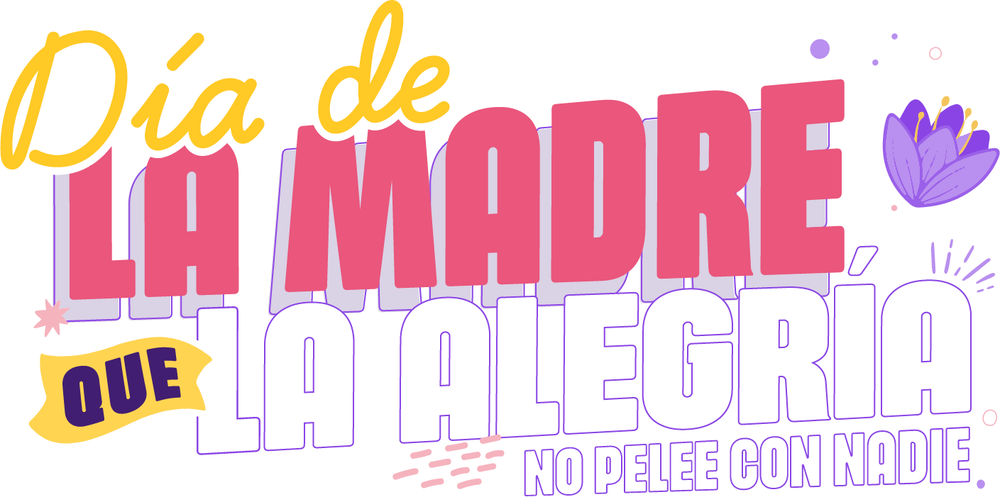

¿Cómo jugar la Escalera del Cuidado?
Instrucciones del Juego
- El juego consiste en una escalera con 8 niveles que representan diferentes aspectos del cuidado familiar.
- Responderás preguntas sobre tus actitudes y comportamientos en el hogar.
- Por cada respuesta positiva, tu avatar subirá un escalón.
- Al final, según el escalón alcanzado, recibirás un mensaje sobre tu nivel de conciencia en el cuidado compartido.
- Reflexiona sobre cada pregunta y las respuestas que obtengas.
Objetivo del Juego
Esta actividad busca generar conciencia sobre la importancia de distribuir equitativamente las labores del hogar y el cuidado emocional en la familia, especialmente en fechas como el Día de la Madre. Queremos promover celebraciones libres de violencia y basadas en el respeto mutuo.
Frases de la Campaña
Mes de la Madre gestiona tu emoción, evita las riñas, que el amor es la celebración.
El cuidado no es sólo tarea de mamá, compártelo a diario y no sólo para festejar.
Exprésale tu admiración cuidando siempre el tono de tu comunicación.
Hoy las celebramos a ellas, controla tu actuar para que el día termine sin nada que lamentar.
Celebramos el día de la madre sin agresión, con responsabilidad en cada decisión.
Las palabras también pueden herir, celebra sin agredir.
Si hay golpes y agresión, se daña la celebración.
Que la violencia contra ellas no opaque el festejo, celebra sin agresiones.
La indiferencia es cómplice de las violencias.